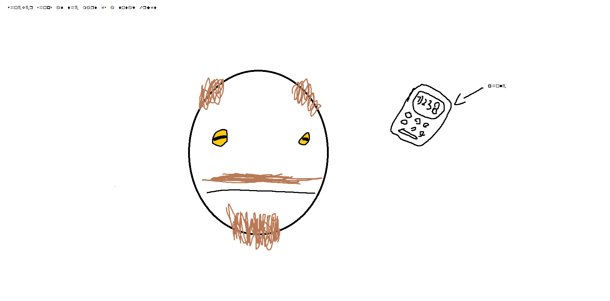

Home
✬
Wall of Fred
Fred is a measurement of time.
1 fred = 15 minutes
Fred is alive.
I saw him on my way home. Sketch of his face below. He didn't show up for more than 4 months.
We mistook him as deceased, but he is alive and, well, still on the phone.
